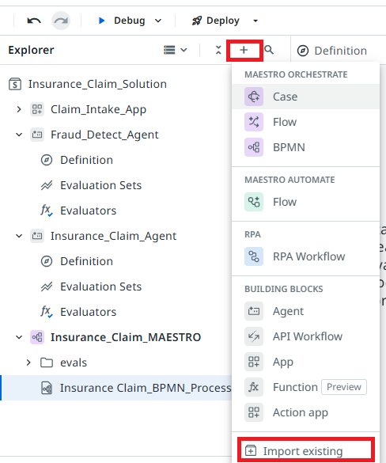
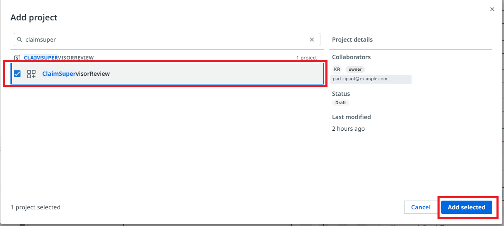
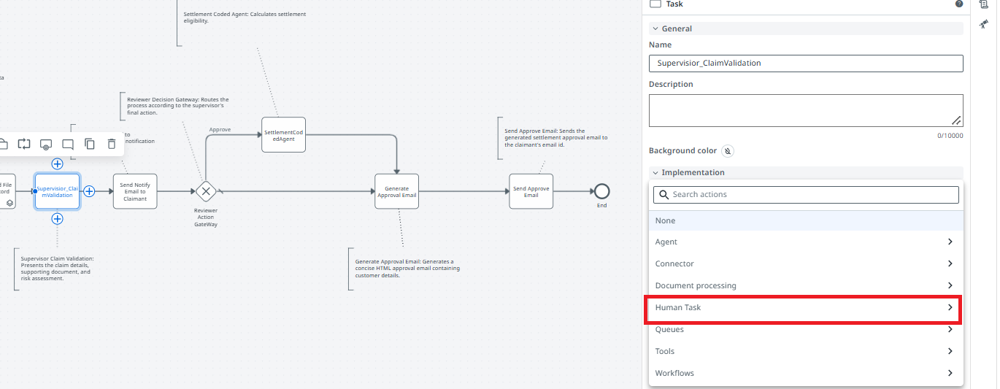
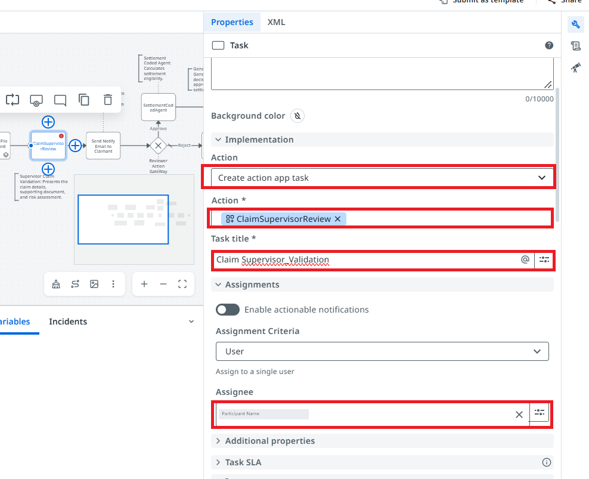
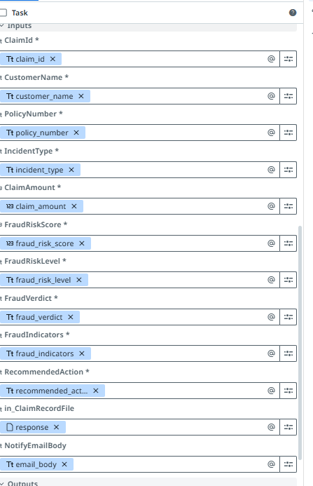
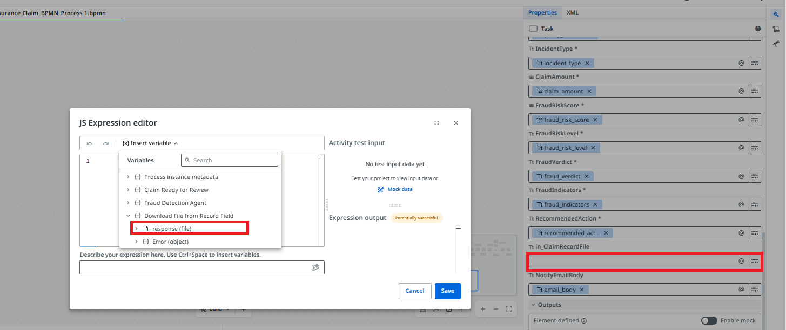
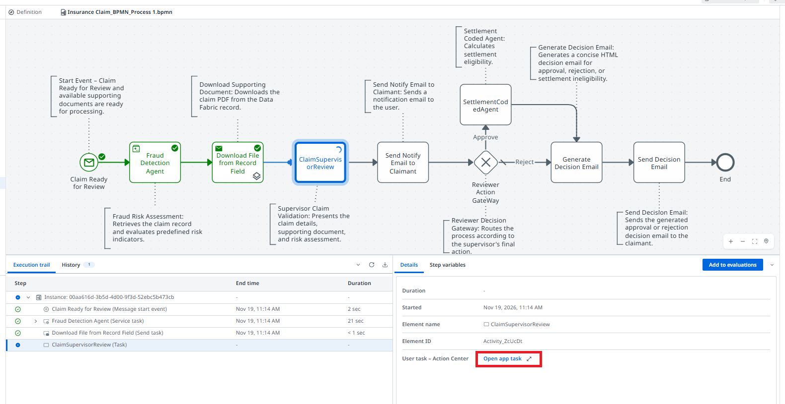
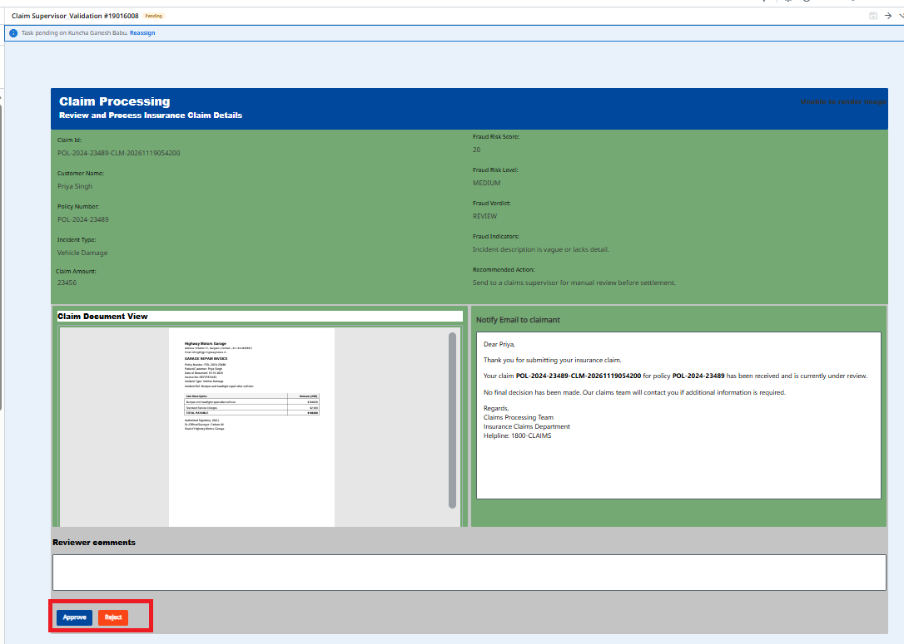

Supervisor Validation
A human now reviews the claim. The review screen is an Action App that is already built and deployed on the tenant — you only import it into your solution and connect it to your process. Do not use Action app in the Explorer (that builds a new one).
Import the existing Action App
Select the task ClaimSupervisorReview on the canvas. In the Explorer click + and choose Import existing under BUILDING BLOCKS.

In the Add project dialog search for Super and tick ClaimSupervisorReview, then add it.

ClaimSupervisorReview with Import existing.Make it a Human Task
With the task selected, open Implementation → Action and choose Human Task.

Set Action to Create action app task, pick the imported app under Action, enter the Task title Claim_Validation, and set Assignment Criteria = User with Assignee = yourself (so you can complete the task during testing).

Map the app inputs
Scroll to the task's input arguments and map each one with Insert variable (JS Expression editor). Most come from the Fraud agent's output objects:
| Argument | Map to |
|---|---|
ClaimId | Fraud Detection Agent → out_ClaimDetails → claim_id |
CustomerName | out_ClaimDetails → customer_name |
PolicyNumber | out_ClaimDetails → policy_number |
IncidentType | out_ClaimDetails → incident_type |
ClaimAmount | out_ClaimDetails → claim_amount |
FraudRiskScore | out_FraudAnalysis → fraud_risk_score |
FraudRiskLevel | out_FraudAnalysis → fraud_risk_level |
FraudVerdict | out_FraudAnalysis → fraud_verdict |
FraudIndicators | out_FraudAnalysis → fraud_indicators |
RecommendedAction | out_FraudAnalysis → recommended_action |
in_ClaimRecordFile | Download File from Record Field → response (file) |
NotifyEmailBody | out_SuggestedResponse → email_body |

Map the claim document: click in_ClaimRecordFile, Insert variable, expand Download File from Record Field, and pick response (file).

Debug, then Approve or Reject
Run Debug. When the action app form opens in Action Center, review the claim and its document, add Reviewer comments, and click Approve or Reject. The button you press becomes vars.action, which the gateway uses next.
Click Debug. When the run reaches ClaimSupervisorReview it waits for you: select the task in the Execution trail and click Open app task in the Details panel.

